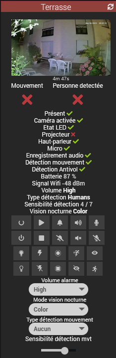
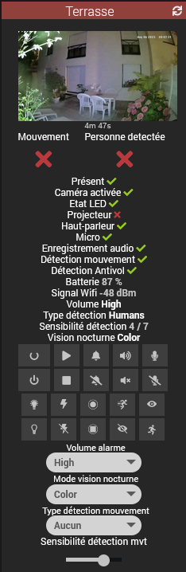

Install the plugin and its dependencies.
Choose either local or remote docker mode.
Don't forget to save the configuration BEFORE launching the dependencies installation.
Note: This action does NOT install the eufy-security-ws image.
eufy-security-ws container host IP, 127.0.0.1 by defaulteufy-security-ws container port, 3000 by defaulteufy-security-ws containerNotes:
- The Eufy daemon won't start if the eufy-security-ws container can't connect to the Eufy Cloud service
- The Version field displays the container version
Local mode requires docker and the docker compose plugin already installed and configured.
If it's not the case install the docker management official plugin or from the command line.
see the docker webpage for details.
For more information see here
Extra parameters: - Device: name of your phone in the Eufy app, used to connect the Eufy Cloud server - User and password: it's strongly advised to create a dedicated user
Post-installation setup:
eufy-security-ws imageeufy-security-ws containerOnce the dependencies are installed you can also use the eufy script found in resources to install,check
and manage the eufy-security-ws image from the command line:
eufy start|stop|restart|status|info|test|logs
Here are the files to adapt and copy on the remote docker:
resources/docker-compose.yaml
resources/eufy
If something goes wrong first run the eufy script available in resources:
eufy test
Or:
python3 resources/test_eufy.py -u server:port
you should get something like this:
{"type":"result","success":true,"result":{"state":{"driver":{"version":"2.4.0","connected":true,"pushConnected":true}
Note that connected and pushConnected need to be true

Note: for now only some devices have been tested. If your device is not supported you can send me the output
from the test_eufy.py program. Please see here for details.

Lists the recognized devices and their status.
 


The URL snapshot command contains the server's picture URL
You can use my ImageViewer widget
Enable picture notifications in your devices parameters from the Eufy app or the snapshots won't refresh
The RTSP stream can be accessed with the Camera plugin or any player such as VLC.
On battery-powered cams it needs to be activated/deactivated using the start_rtsp and stop_rtsp equipment commands.
Depending on devices login/passwd is either the Eufy account id or random generated by the application on the
Parameters > General > Storage > NAS(RTSP) page
IP is either the one from the base or from the camera
live0...liven indicates the camera number, see the screenshot below:

Check the URL depending your model here and here
See here